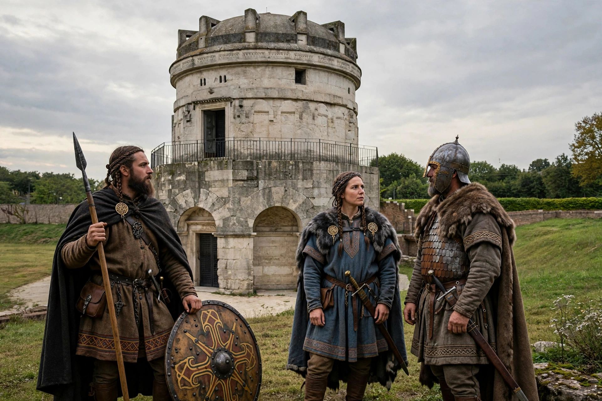

Ostrogoths
From Wikipedia, the free encyclopedia
| Ostrogoths | |
| Ethnicity | East Germanic |
|---|---|
| Language | Gothic (extinct) |
| Religion | Gothic paganism, Arian Christianity |
| Kingdom | Ostrogothic Kingdom of Italy (493–553) |
| Notable rulers | Theodoric the Great, Amalasuntha, Totila |

Theodoric's mausoleum (La Rotonda) in Ravenna
The Ostrogoths (Latin: Ostrogothi) were a Roman-era Germanic people. In the 5th century they followed the Visigoths in creating one of the two great Gothic kingdoms within the Roman Empire, based upon the large Gothic populations who had settled in the Balkans. The Ostrogoths subsequently created the Ostrogothic Kingdom of Italy, which lasted from 493 until 553.
Origins
The Goths are traditionally said to have migrated from southern Scandinavia to the Vistula basin and then to the Black Sea steppe. During the 3rd and 4th centuries the Gothic peoples divided into two main groupings east and west of the Dniester river — the eastern group, later called Ostrogoths, came under the domination of the Huns after about 370, serving in Attila's armies while retaining their own kings of the Amal dynasty.
Independence and the move to Italy
After the collapse of the Hunnic empire at the Battle of Nedao (454), the Ostrogoths settled in Pannonia as Roman foederati. Under Theodoric the Great, who became king in 474, they became a major power in the Balkans. In 488 the Eastern emperor Zeno commissioned Theodoric to depose Odoacer, the Germanic king of Italy. Theodoric invaded in 489, and after a long war, including the siege of Ravenna, Odoacer surrendered in 493 and was killed by Theodoric at a banquet.
The Ostrogothic Kingdom
Theodoric ruled Italy for 33 years, preserving Roman administration, law and Senate, promoting building and relative religious tolerance between his Arian Gothic subjects and Catholic Romans. His court at Ravenna patronised figures such as Boethius and Cassiodorus. After his death in 526, succession struggles weakened the kingdom: his daughter Amalasuntha ruled as regent for Athalaric and was murdered in 535, giving the emperor Justinian I a pretext for invasion.
Gothic War and fall
The ensuing Gothic War (535–554) devastated Italy. Byzantine generals Belisarius and Narses fought Ostrogothic kings including Witiges, Totila — who briefly restored Gothic fortunes — and Teia, the last king, killed at the Battle of Mons Lactarius in 552/553. The Pragmatic Sanction of 554 reintegrated Italy into the empire, and the Ostrogoths disappear from history as a distinct people.